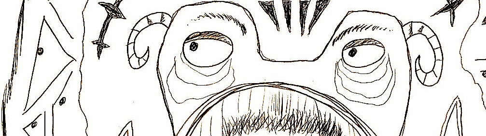

ArtFèvre 2020
ArtFèvre, c'est une initative imaginée avec mon ami Alexis, et lancée entre amis au mois de Février 2020. Le concept : 29 thèmes, un par jour du mois, sont tirés au sort à partir des participants, qui doivent tous créer une production artistique par jour suivant ces thèmes. Le tout posté sur un site internet pour voir comment les autres ont interprété tel ou tel thème.
En Février, il y a 29 Jours. On vous propose d’utiliser chacun d’entre eux pour créer — de manière intensive et sans jugement — hors de notre zone de confort, et avec des contraintes imposées. L’idée, c’est qu’à la fin du mois, chacun⋅e puisse se retourner et se dire : « Ouah, j’ai fait tout ça !? »
Retrouvez le fonctionnement d'ArtFèvre sur son site internet dédié.
Beaucoup de mes productions qui sont nées lors de ce mois lors de ce mois ont été musicales, Je les ai rassemblé sur BandCamp.